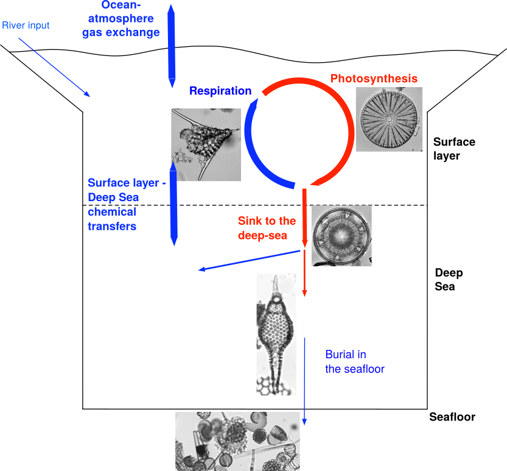

The former was a collegial effort with many other MOPGA laureates, in a collection of articles on Climate change, where we tried to explain how biodiversity is affected by the current climate crisis while trying to convey the idea that part of that biodiversity have an important role in climate regulation (in particular plankton, which is where Gayane, David and I came in).
Writing for an audience of teenagers (as the article was reviewed by a 14-year old) was a fun and novel experience.
The original mockup I made for the first draft version of Figure 1. I'm glad we got a real professional illustrator to make the final version :)
The second article is about automatic identification of radiolarians using an AI-based approach, something I already dabbled with in the past.
I hosted Veronica, the lead author, in Berlin last December, where she was able to test her trained algorithm on additional material, including "real-life" scenarii where the specimens are broken, partially covered by other specimens, etc.
We are still a long way from being able to just scan a microslide and have the AI automatically recognizes and counts all radiolarian specimens on that slide but thanks to such an article we are one step closer. One day soon I will write a small post explaining exactly my vision on what the next steps are, granted I have enough time to do so.
References:
Asatryan G., Lazarus D., Harbott M., Todorovic S., Kaplan J. O., Lee C. E., Parmesan C., Renaudie J., Thomas H., Wu H., Richards C. L. (2022) How do plants, animals and microbes interact and respond to climate change? Frontiers for Young Minds.
Carlsson V., Danelian T., Boulet P., Devienne P., Laforge A., Renaudie J. (2022) Artificial Intelligence (AI) applied to the Classification of Eight Middle Eocene Species of the Genus Podocyrtis (Polycystine Radiolaria). Journal of Micropalaeontology, 41(2):165-182.